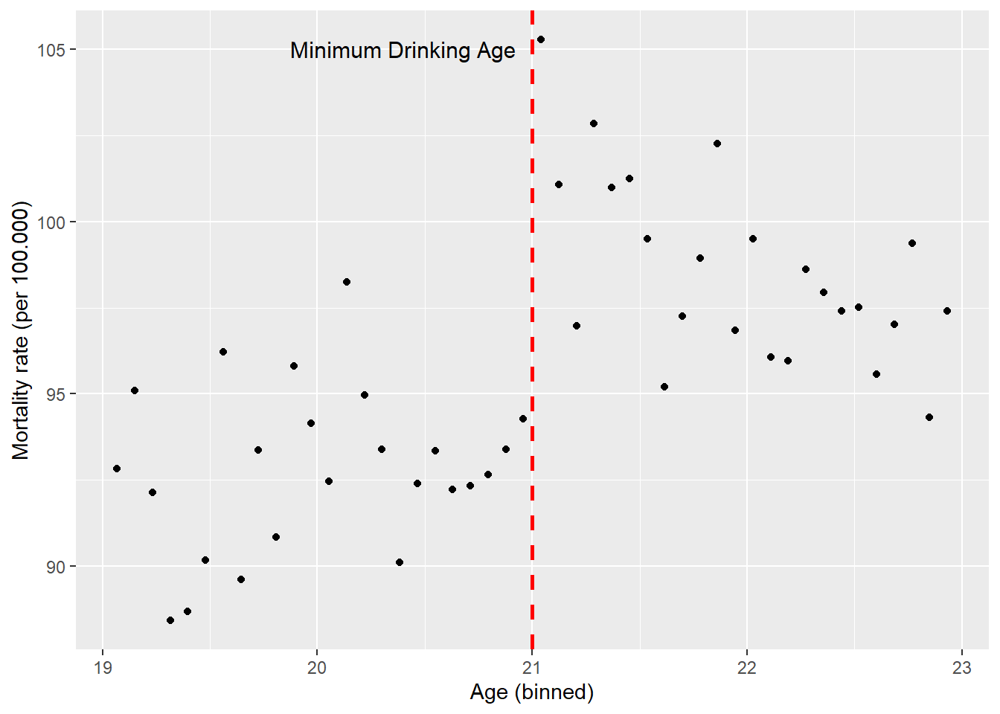
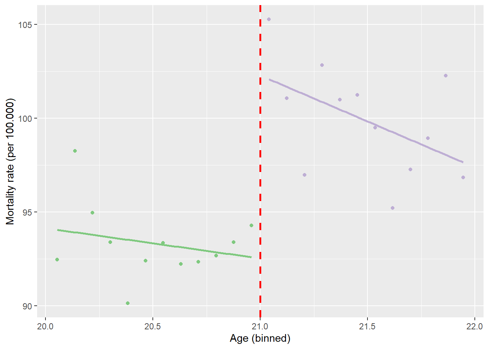

# Instalar pacotes se necessário
if (!require("dplyr")) install.packages("dplyr")
if (!require("ggplot2")) install.packages("ggplot2")
if (!require("rddtools")) install.packages("rddtools")
if (!require("magrittr")) install.packages("magrittr")
# Carregar pacotes
library(dplyr)
library(ggplot2)
library(rddtools)
library(magrittr)Introdução
O Regression Discontinuity Design (RDD), ou Regressão com Descontinuidade, é mais um método para estimação do efeito causais (treatment effect).
Sua a fundamentação teórica, encontra-se no trabalho seminal de Hahn, Todd e Van der Klaauw (2001) [1], que formalizou as condições sob as quais o RDD identifica um efeito de tratamento causal. Em seguida, faremos um paralelo entre duas aplicações empíricas clássicas:
Lee (2008) [2]: O estudo sobre a vantagem eleitoral de incumbentes nos EUA, um exemplo de como uma regra (vencer por uma margem mínima) cria um quase-experimento.
Carpenter & Dobkin (2009) [3]: A análise do efeito da idade mínima para consumo de álcool sobre a mortalidade, um caso onde a variável de tratamento é perfeitamente determinada por uma lei.
A Fundação Teórica
O artigo de Hahn, Todd e Van der Klaauw (HTV) foi crucial para estabelecer a credibilidade do RDD como um método quase-experimental. Eles mostraram que, sob hipoteses relativamente fracas, o RDD pode identificar um efeito de tratamento local com a mesma validade de um experimento aleatório.
O Setup Básico do RDD
Imagine uma situação onde uma intervenção (tratamento) é atribuída com base em uma variável de continuidade (running variable), que chamaremos de Z. Existe um ponto de corte (cutoff), c, que determina quem recebe o tratamento. Por exemplo, Z pode ser a nota de um aluno em um exame, e todos com nota Z >= c recebem uma bolsa de estudos.
O RDD explora a ideia de que indivíduos com valores de Z muito próximos ao cutoff c, mas de lados opostos, são, em média, muito semelhantes em todas as outras características (observáveis e não observáveis). A única diferença sistemática entre eles é o recebimento do tratamento. Portanto, qualquer “salto” ou descontinuidade na variável de resultado nesse ponto pode ser atribuído ao efeito causal do tratamento.
A Condição de Identificação Fundamental
A grande contribuição de HTV foi esclarecer o pressuposto central que permite a identificação do efeito causal. Este pressuposto é a continuidade das funções de regressão dos resultados potenciais no cutoff.
Vamos definir os resultados potenciais:
Y(1): O resultado que um indivíduo teria se recebesse o tratamento.Y(0): O resultado que o mesmo indivíduo teria se não recebesse o tratamento.
O pressuposto fundamental do RDD é que as médias condicionais de Y(1) e Y(0) são contínuas em relação à variável de continuidade Z no ponto c.
Pressuposto de Continuidade (HTV, 2001): As funções
E[Y(1) | Z=z]eE[Y(0) | Z=z]são contínuas emz=c.
Em palavras simples, isso significa que, na ausência do tratamento, a relação entre a variável de continuidade e o resultado seria suave e não teria um salto no cutoff. Se essa condição for válida, qualquer salto observado no resultado real no cutoff deve ser atribuído ao tratamento.
O que o RDD Estima: O LATE
Sob este pressuposto, HTV mostram que o RDD identifica o Efeito Médio do Tratamento Local (Local Average Treatment Effect - LATE) no cutoff. O estimador é a razão entre o salto no resultado e o salto na probabilidade de tratamento:
\[ \text{LATE} = \frac{\lim_{z \to c^+} E[Y|Z=z] - \lim_{z \to c^-} E[Y|Z=z]}{\lim_{z \to c^+} E[D|Z=z] - \lim_{z \to c^-} E[D|Z=z]} \]
Onde: - Y é o resultado observado. - D é o indicador de tratamento (0 ou 1). - O numerador é o “salto” no resultado no cutoff. - O denominador é o “salto” na probabilidade de tratamento no cutoff.
No caso de um Sharp RDD, o denominador é 1 (o salto na probabilidade é de 0 para 1), então o LATE é simplesmente o tamanho do salto no resultado.
Parte 2: O Paralelo Teórico nas Aplicações
Os estudos de Lee (2008) e Carpenter & Dobkin (2009) são exemplos perfeitos que ilustram a teoria de HTV em contextos muito diferentes. Ambos são Sharp RDDs e sua credibilidade reside na impossibilidade (ou grande dificuldade) de manipular a variável de continuidade.
Vamos comparar os dois estudos lado a lado:
| Característica | Lee (2008): Vantagem de Incumbência | Carpenter & Dobkin (2009): Álcool e Mortalidade |
|---|---|---|
| Questão Causal | Qual o efeito causal de vencer uma eleição sobre os votos na próxima? | Qual o efeito causal do acesso legal ao álcool sobre a mortalidade? |
| Variável de Continuidade (Z) | Margem de vitória do partido Democrata na eleição t-1. | Idade do indivíduo. |
| Cutoff (c) | 0 (zero). | 21 anos. |
| Tratamento (D) | Vencer a eleição em t-1 (ser o incumbente). | Ter permissão legal para comprar e consumir álcool. |
| Resultado (Y) | Porcentagem de votos do partido Democrata na eleição t. | Taxa de mortalidade (por todas as causas, acidentes, suicídio, etc.). |
| Tipo de RDD | Sharp RDD. A vitória é uma função determinística da margem > 0. | Sharp RDD. A permissão legal é uma função determinística da idade. |
A Lógica da Identificação em Cada Contexto
Lee (2008): Eleições como Experimentos Aleatórios
A genialidade do estudo de Lee é argumentar que, em eleições muito disputadas (com margem de vitória próxima de zero), o vencedor é tão bom quanto aleatório. Um candidato que vence por 0.1% dos votos é, em média, extremamente semelhante a um que perde por 0.1%. Eles têm financiamento, qualidade e apelo eleitoral virtualmente idênticos.
- Validade do Pressuposto de Continuidade: É plausível que a porcentagem de votos na próxima eleição (
Y) variaria suavemente com a margem de vitória anterior (Z) se não houvesse o “prêmio” da incumbência. Não há razão para acreditar que um candidato que vence por 0.1% teria uma trajetória de votos futura drasticamente diferente de um que perde por 0.1%, a não ser pelo fato de ter vencido. - Impossibilidade de Manipulação: É extremamente difícil para um candidato controlar o resultado de uma eleição com precisão suficiente para garantir uma vitória por uma margem mínima.
O estudo encontra um salto de cerca de 7-8 pontos percentuais na porcentagem de votos na eleição seguinte, que é o LATE da incumbência.
Carpenter & Dobkin (2009): Leis como Descontinuidades Perfeitas
Este estudo explora uma regra institucional ainda mais rígida: a idade mínima para o consumo de álcool (MLDA - Minimum Legal Drinking Age).
- Validade do Pressuposto de Continuidade: A variável de continuidade é a idade. É altamente plausível que a taxa de mortalidade (
Y) mude suavemente com a idade (Z). Não há razão biológica ou social para que a mortalidade de uma pessoa salte abruptamente no dia do seu 21º aniversário, a não ser por uma mudança de comportamento induzida por uma nova permissão legal. - Impossibilidade de Manipulação: A idade de uma pessoa é uma variável que não pode ser manipulada. Ninguém pode escolher fazer 21 anos mais cedo para beber legalmente. Isso torna o design RDD extremamente crível neste contexto.
O estudo encontra um salto discreto de cerca de 9% na taxa de mortalidade geral logo após os 21 anos, atribuído ao aumento do consumo de álcool e comportamentos de risco associados.
Conclusão: A Unidade na Diversidade do RDD
Ao comparar os estudos de Lee (2008) e Carpenter & Dobkin (2009) através das lentes teóricas de Hahn, Todd e Van der Klaauw (2001), vemos um padrão unificador. Ambos os estudos, embora aplicados a domínios completamente diferentes (ciência política e saúde pública), compartilham a mesma lógica fundamental:
- Identificam uma regra arbitrária (vencer uma eleição, atingir 21 anos) que gera uma descontinuidade no tratamento.
- Argumentam que a variável de continuidade não é manipulável em torno do cutoff, garantindo que a comparação local seja válida.
- Demonstram visualmente e estimam quantitativamente um “salto” na variável de resultado, que, sob o pressuposto de continuidade, pode ser interpretado como um efeito causal local.
O RDD, portanto, nos permite transformar dados observacionais em evidências quase-experimentais, fornecendo respostas críveis para algumas das questões mais importantes das ciências sociais aplicadas.
Replicação de Carpenter & Dobkin (2009)
O Blog de Leppert (2020) [4] traz um tutorial de como aplicar o RDD por da replicação de Carpenter & Dobkin (2009) usando o pacote rddtools.
Primeiro, vamos carregar todos os pacotes necessários para a análise.
Agora, vamos carregar os dados reais do estudo (estão disponíveis no github de Leppert
carpenter_dobkin_2009 <- readRDS("carpenter_dobkin_2009.rds")Vamos visualizar os dados. Há um salto notável na taxa de mortalidade aos 21 anos.
carpenter_dobkin_2009 %>%
ggplot(aes(x = agecell, y = all)) +
geom_point() +
geom_vline(xintercept = 21, color = "red", size = 1, linetype = "dashed") +
annotate("text", x = 20.4, y = 105, label = "Minimum Drinking Age",
size=4) +
labs(y = "Mortality rate (per 100.000)",
x = "Age (binned)")Warning: Using `size` aesthetic for lines was deprecated in ggplot2 3.4.0.
ℹ Please use `linewidth` instead.Warning: Removed 2 rows containing missing values or values outside the scale range
(`geom_point()`).
O RDD pode ser estimado por OLS. A primeira regressão aplica a mesma inclinação em ambos os lados do cutoff.
Primeiro, criamos uma variável dummy (threshold). Em seguida, especificamos um modelo linear para regredir a mortalidade (all) na dummy threshold e na idade (agecell) centrada em 21.
lm_same_slope <- carpenter_dobkin_2009 %>%
mutate(threshold = ifelse(agecell >= 21, 1, 0)) %$%
lm(all ~ threshold + I(agecell - 21))
summary(lm_same_slope)
Call:
lm(formula = all ~ threshold + I(agecell - 21))
Residuals:
Min 1Q Median 3Q Max
-5.0559 -1.8483 0.1149 1.4909 5.8043
Coefficients:
Estimate Std. Error t value Pr(>|t|)
(Intercept) 91.8414 0.8050 114.083 < 2e-16 ***
threshold 7.6627 1.4403 5.320 3.15e-06 ***
I(agecell - 21) -0.9747 0.6325 -1.541 0.13
---
Signif. codes: 0 '***' 0.001 '**' 0.01 '*' 0.05 '.' 0.1 ' ' 1
Residual standard error: 2.493 on 45 degrees of freedom
(2 observations deleted due to missingness)
Multiple R-squared: 0.5946, Adjusted R-squared: 0.5765
F-statistic: 32.99 on 2 and 45 DF, p-value: 1.508e-09O pacote rddtools simplifica este processo.
rdd_data(y = carpenter_dobkin_2009$all,
x = carpenter_dobkin_2009$agecell,
cutpoint = 21) %>%
rdd_reg_lm(slope = "same") %>%
summary()
Call:
lm(formula = y ~ ., data = dat_step1, weights = weights)
Residuals:
Min 1Q Median 3Q Max
-5.0559 -1.8483 0.1149 1.4909 5.8043
Coefficients:
Estimate Std. Error t value Pr(>|t|)
(Intercept) 91.8414 0.8050 114.083 < 2e-16 ***
D 7.6627 1.4403 5.320 3.15e-06 ***
x -0.9747 0.6325 -1.541 0.13
---
Signif. codes: 0 '***' 0.001 '**' 0.01 '*' 0.05 '.' 0.1 ' ' 1
Residual standard error: 2.493 on 45 degrees of freedom
(2 observations deleted due to missingness)
Multiple R-squared: 0.5946, Adjusted R-squared: 0.5765
F-statistic: 32.99 on 2 and 45 DF, p-value: 1.508e-09O gráfico mostra a linha de regressão ajustada, que tem a mesma inclinação em ambos os lados do cutoff.
carpenter_dobkin_2009 %>%
select(agecell, all) %>%
mutate(threshold = as.factor(ifelse(agecell >= 21, 1, 0))) %>%
ggplot(aes(x = agecell, y = all)) +
geom_point(aes(color = threshold)) +
geom_smooth(method = "lm", se = FALSE) +
scale_color_brewer(palette = "Accent") +
guides(color = FALSE) +
geom_vline(xintercept = 21, color = "red",
size = 1, linetype = "dashed") +
labs(y = "Mortality rate (per 100.000)",
x = "Age (binned)")Warning: The `<scale>` argument of `guides()` cannot be `FALSE`. Use "none" instead as
of ggplot2 3.3.4.`geom_smooth()` using formula = 'y ~ x'Warning: Removed 2 rows containing non-finite outside the scale range
(`stat_smooth()`).Warning: Removed 2 rows containing missing values or values outside the scale range
(`geom_point()`).
O coeficiente da variável dummy threshold é o efeito médio do tratamento. Em média, a taxa de mortalidade por 100.000 para indivíduos que atingem a idade mínima para beber é 7.66 pontos mais alta.
A segunda regressão aplica inclinações diferentes em ambos os lados do cutoff. Isso é alcançado especificando uma interação entre a dummy threshold e a idade centrada.
lm_different_slope <- carpenter_dobkin_2009 %>%
mutate(threshold = ifelse(agecell >= 21, 1, 0)) %$%
lm(all ~ threshold + I(agecell - 21) + threshold:I(agecell - 21))
summary(lm_different_slope)
Call:
lm(formula = all ~ threshold + I(agecell - 21) + threshold:I(agecell -
21))
Residuals:
Min 1Q Median 3Q Max
-4.368 -1.787 0.117 1.108 5.341
Coefficients:
Estimate Std. Error t value Pr(>|t|)
(Intercept) 93.6184 0.9325 100.399 < 2e-16 ***
threshold 7.6627 1.3187 5.811 6.4e-07 ***
I(agecell - 21) 0.8270 0.8189 1.010 0.31809
threshold:I(agecell - 21) -3.6034 1.1581 -3.111 0.00327 **
---
Signif. codes: 0 '***' 0.001 '**' 0.01 '*' 0.05 '.' 0.1 ' ' 1
Residual standard error: 2.283 on 44 degrees of freedom
(2 observations deleted due to missingness)
Multiple R-squared: 0.6677, Adjusted R-squared: 0.645
F-statistic: 29.47 on 3 and 44 DF, p-value: 1.325e-10No rddtools, usamos o argumento slope = "separate".
rdd_data(y = carpenter_dobkin_2009$all,
x = carpenter_dobkin_2009$agecell,
cutpoint = 21) %>%
rdd_reg_lm(slope = "separate") %>%
summary()
Call:
lm(formula = y ~ ., data = dat_step1, weights = weights)
Residuals:
Min 1Q Median 3Q Max
-4.368 -1.787 0.117 1.108 5.341
Coefficients:
Estimate Std. Error t value Pr(>|t|)
(Intercept) 93.6184 0.9325 100.399 < 2e-16 ***
D 7.6627 1.3187 5.811 6.4e-07 ***
x 0.8270 0.8189 1.010 0.31809
x_right -3.6034 1.1581 -3.111 0.00327 **
---
Signif. codes: 0 '***' 0.001 '**' 0.01 '*' 0.05 '.' 0.1 ' ' 1
Residual standard error: 2.283 on 44 degrees of freedom
(2 observations deleted due to missingness)
Multiple R-squared: 0.6677, Adjusted R-squared: 0.645
F-statistic: 29.47 on 3 and 44 DF, p-value: 1.325e-10O gráfico mostra as diferentes inclinações.
carpenter_dobkin_2009 %>%
select(agecell, all) %>%
mutate(threshold = as.factor(ifelse(agecell >= 21, 1, 0))) %>%
ggplot(aes(x = agecell, y = all, color = threshold)) +
geom_point() +
geom_smooth(method = "lm", se = FALSE) +
scale_color_brewer(palette = "Accent") +
guides(color = FALSE) +
geom_vline(xintercept = 21, color = "red",
size = 1, linetype = "dashed") +
labs(y = "Mortality rate (per 100.000)",
x = "Age (binned)")`geom_smooth()` using formula = 'y ~ x'Warning: Removed 2 rows containing non-finite outside the scale range
(`stat_smooth()`).Warning: Removed 2 rows containing missing values or values outside the scale range
(`geom_point()`).
Esta abordagem não altera a interpretação do efeito do tratamento! Em média, a taxa de mortalidade por 100.000 para indivíduos que atingem a idade mínima para beber é 7.66 pontos mais alta.
Análise de Sensibilidade: Modificando a Forma Funcional
Deve-se prestar atenção especial à especificação da forma funcional.
Abaixo, modelamos uma relação quadrática entre idade e mortalidade.
lm_quadratic <- carpenter_dobkin_2009 %>%
mutate(threshold = ifelse(agecell >= 21, 1, 0)) %$%
lm(all ~ threshold + I(agecell - 21) + I((agecell -21)^2) + threshold:I(agecell - 21) +
threshold:I((agecell - 21)^2))
summary(lm_quadratic)
Call:
lm(formula = all ~ threshold + I(agecell - 21) + I((agecell -
21)^2) + threshold:I(agecell - 21) + threshold:I((agecell -
21)^2))
Residuals:
Min 1Q Median 3Q Max
-4.3343 -1.3946 0.1849 1.2848 5.0817
Coefficients:
Estimate Std. Error t value Pr(>|t|)
(Intercept) 93.0729 1.4038 66.301 < 2e-16 ***
threshold 9.5478 1.9853 4.809 1.97e-05 ***
I(agecell - 21) -0.8306 3.2901 -0.252 0.802
I((agecell - 21)^2) -0.8403 1.6153 -0.520 0.606
threshold:I(agecell - 21) -6.0170 4.6529 -1.293 0.203
threshold:I((agecell - 21)^2) 2.9042 2.2843 1.271 0.211
---
Signif. codes: 0 '***' 0.001 '**' 0.01 '*' 0.05 '.' 0.1 ' ' 1
Residual standard error: 2.285 on 42 degrees of freedom
(2 observations deleted due to missingness)
Multiple R-squared: 0.6821, Adjusted R-squared: 0.6442
F-statistic: 18.02 on 5 and 42 DF, p-value: 1.624e-09Em rdd_reg_lm(), modificamos o argumento order = 2.
rdd_data(y = carpenter_dobkin_2009$all,
x = carpenter_dobkin_2009$agecell,
cutpoint = 21) %>%
rdd_reg_lm(slope = "separate", order = 2) %>%
summary()
Call:
lm(formula = y ~ ., data = dat_step1, weights = weights)
Residuals:
Min 1Q Median 3Q Max
-4.3343 -1.3946 0.1849 1.2848 5.0817
Coefficients:
Estimate Std. Error t value Pr(>|t|)
(Intercept) 93.0729 1.4038 66.301 < 2e-16 ***
D 9.5478 1.9853 4.809 1.97e-05 ***
x -0.8306 3.2901 -0.252 0.802
`x^2` -0.8403 1.6153 -0.520 0.606
x_right -6.0170 4.6529 -1.293 0.203
`x^2_right` 2.9042 2.2843 1.271 0.211
---
Signif. codes: 0 '***' 0.001 '**' 0.01 '*' 0.05 '.' 0.1 ' ' 1
Residual standard error: 2.285 on 42 degrees of freedom
(2 observations deleted due to missingness)
Multiple R-squared: 0.6821, Adjusted R-squared: 0.6442
F-statistic: 18.02 on 5 and 42 DF, p-value: 1.624e-09À direita do cutoff, este modelo parece se ajustar melhor aos dados!
carpenter_dobkin_2009 %>%
select(agecell, all) %>%
mutate(threshold = as.factor(ifelse(agecell >= 21, 1, 0))) %>%
ggplot(aes(x = agecell, y = all, color = threshold)) +
geom_point() +
geom_smooth(method = "lm",
formula = y ~ x + I(x ^ 2),
se = FALSE) +
scale_color_brewer(palette = "Accent") +
guides(color = FALSE) +
geom_vline(xintercept = 21, color = "red",
size = 1, linetype = "dashed") +
labs(y = "Mortality rate (per 100.000)",
x = "Age (binned)")Warning: Removed 2 rows containing non-finite outside the scale range
(`stat_smooth()`).Warning: Removed 2 rows containing missing values or values outside the scale range
(`geom_point()`).
Em média, a taxa de mortalidade por 100.000 para indivíduos que atingem a idade mínima para beber é agora 9.55 pontos mais alta.
Análise de Sensibilidade: Tamanho do amostra (Sensibilidade ao Bandwidth)
É aconselhável verificar a sensibilidade dos resultados em relação à limitação do tamanho da amostra.
Em vez de usar toda a faixa de idade, usamos apenas indivíduos com idade entre 20 e 22 anos.
lm_sensitivity <- carpenter_dobkin_2009 %>%
filter(agecell >= 20 & agecell <= 22) %>%
mutate(threshold = ifelse(agecell >= 21, 1, 0)) %$%
lm(all ~ threshold + I(agecell - 21) + threshold:I(agecell - 21))
summary(lm_sensitivity)
Call:
lm(formula = all ~ threshold + I(agecell - 21) + threshold:I(agecell -
21))
Residuals:
Min 1Q Median 3Q Max
-4.3038 -0.9132 -0.1746 1.1758 4.3307
Coefficients:
Estimate Std. Error t value Pr(>|t|)
(Intercept) 92.524 1.370 67.550 < 2e-16 ***
threshold 9.753 1.937 5.035 6.34e-05 ***
I(agecell - 21) -1.612 2.407 -0.669 0.511
threshold:I(agecell - 21) -3.289 3.405 -0.966 0.346
---
Signif. codes: 0 '***' 0.001 '**' 0.01 '*' 0.05 '.' 0.1 ' ' 1
Residual standard error: 2.366 on 20 degrees of freedom
(2 observations deleted due to missingness)
Multiple R-squared: 0.7161, Adjusted R-squared: 0.6735
F-statistic: 16.82 on 3 and 20 DF, p-value: 1.083e-05carpenter_dobkin_2009 %>%
filter(agecell >= 20 & agecell <= 22) %>%
select(agecell, all) %>%
mutate(threshold = as.factor(ifelse(agecell >= 21, 1, 0))) %>%
ggplot(aes(x = agecell, y = all, color = threshold)) +
geom_point() +
geom_smooth(method = "lm", se = FALSE) +
scale_color_brewer(palette = "Accent") +
guides(color = FALSE) +
geom_vline(xintercept = 21, color = "red",
size = 1, linetype = "dashed") +
labs(y = "Mortality rate (per 100.000)",
x = "Age (binned)")`geom_smooth()` using formula = 'y ~ x'Warning: Removed 2 rows containing non-finite outside the scale range
(`stat_smooth()`).Warning: Removed 2 rows containing missing values or values outside the scale range
(`geom_point()`).
Este resultado é bastante semelhante à abordagem anterior com o modelo quadrático. Em média, a taxa de mortalidade por 100.000 para indivíduos que atingem a idade mínima para beber é 9.75 pontos mais alta.
Usando o rddtools podemos fazer a análise por ordem do polinômio
rdd_sens <-rdd_data(y = carpenter_dobkin_2009$all,
x = carpenter_dobkin_2009$agecell,
cutpoint = 21)
rdd_sens_ik <- rdd_bw_ik(rdd_sens)
rdd_sens2 <- rdd_reg_lm(rdd_object=rdd_sens, order=2, bw=rdd_sens_ik)
plotSensi(rdd_sens2, from=1, to=5, by=1)
Análise de Sensibilidade: placebo do cutoff
Podemos repetir a análise para placebos falsos
plotPlacebo(rdd_sens2)
Referências
[1] Hahn, J., Todd, P., & Van der Klaauw, W. (2001). Identification and Estimation of Treatment Effects with a Regression-Discontinuity Design. Econometrica, 69(1), 201-209.
[2] Lee, D. S. (2008). Randomized experiments from non-random selection in U.S. House elections. Journal of Econometrics, 142(2), 675-697.
[3] Carpenter, C., & Dobkin, C. (2009). The Effect of Alcohol Consumption on Mortality: Regression Discontinuity Evidence from the Minimum Drinking Age. American Economic Journal: Applied Economics, 1(1), 164–182.
[4] Leppert, P. R Tutorial: Regression Discontinuity Design. Disponível em: https://rpubs.com/phle/r_tutorial_regression_discontinuity_design. Acesso em: 01/12/2025.